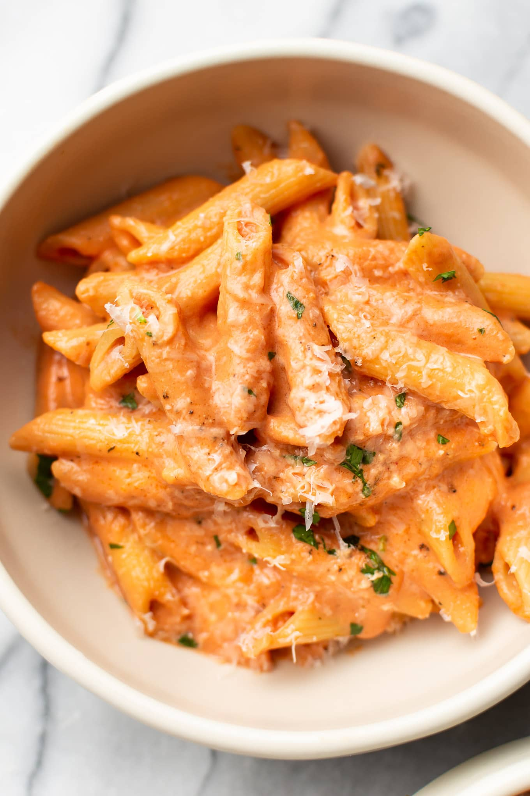

Margerita Pizza

A Classic Red Sauce Pasta
Tje Red Sauce Pasta is a delicious italian delight
Pasta, margerita cheese, basil and Tomato suace
Ingredients
- Pasta
- Butter
- Garlic
- Tomato Paste
- Heavy Cream
- italian Seasoning
Steps
- Boil a large, salted pot of water for your pasta and
cook it al dente according to package instructions.
- Meanwhile (once the pasta starts to cook),
add the butter to a skillet over medium-high heat.
Once it melts, add the garlic and sauté for about a minute, stirring constantly.
- Add in the tomato paste, tomato sauce, cream, and Italian seasoning.
Stir until it's nice and smooth.
Let the sauce cook for about 5 minutes or until it's thickened to your liking
(it should be very gently bubbling, so you may need to turn down the heat).
- Season the sauce with salt & pepper as needed (I'm pretty generous with both).
If the sauce is a little too acidic/tangy for your liking, add in a pinch of sugar.
- Drain the pasta and toss with the sauce (add a splash of hot pasta water if the sauce gets too thick).
Serve immediately with plenty of parmesan cheese over top.